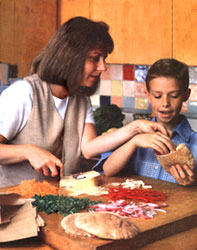

Mother's Kitchen
I could look forward to the Labor Day weekend barbecue if I weren't dreading the lunch-making marathon only hours away. Once those school doors open, I'm packing three lunches daily. Not only does this routine turn any kitchen into a mass assembly line, but depending on the whims of the consumers, it's also subject to change from day to day. When my son was in the first grade, he would eat only peanut butter and jelly for the entire school year. But as time goes on, picky taste buds give way to what's the socially acceptable lunch. If the "cool" lunch is baloney on white and our house is without high-fat, nitrate-loaded lunch meat, then guess who's going to join the "trade-your-lunch" network? We could eliminate some lunch trading by having our children assemble their own lunches, but it's doubtful that they'll survive on marshmallow-creme sandwiches.
Lunch packing for adults can be almost as challenging. My husband prefers a hearty "real" lunch as opposed to my salad lunch. He rarely complains about the condition of his lunch (sometimes he makes it) unless he's forced to eat vegetable soup five days consecutively. I, of course, never complain about my lunch; who would listen? Variety is the key to an exciting lunch since looking forward to that noon hour gets us through the morning.
As parents we know that our children's learning potential is increased with proper nourishment throughout the day. As working adults we have discovered that our eating habits affect our productivity. How many of us have fallen asleep on the computer keyboard after a high-fat business lunch? Studies show that the most productive hours of the day for the majority of people are those between 10:00 A.M. and 3:00 P.M., then diminishing until bedtime. This makes lunch a more important meal for us than dinner, which is at the end of the day. Our best bet for making it through the day is a low-fat, complex-carbohydrate lunch, using some protein such as chicken, fish, or beans. Not only will we feel better, we'll be satisfied so we won't be tempted to eat an entire bag of cookies during our afternoon coffee break.
If a family member must have meat in her sandwich, shred about 1/4 cup cooked chicken or turkey and add to this sandwich. Just triple the recipe if you're making three lunches.
1 whole wheat or plain pita bread-1 inch section sliced off
1 cup small spinach leaves-washed and dried, and sliced into 1/4 inch strips
1/2 cup coarsely grated carrot
1/2 small red pepper-seeded, cored, and cut into thin strips, then diced
1/2 small red onion peeled, halved, and sliced thin
1/4 cup Swiss cheese-grated (1 use a low - fat smoked Swiss)
optional: 1/4 teaspoon hot pepper (such as jalapeno)-seeded and minced
optional: 1/4 cup cooked chicken or turkey, (shredded)
Dressing
1/4 cup low fat yogurt
1 teaspoon Dijon mustard
salt and freshly ground pepper
(or use a favorite low fat bottled dressing)
The filling and dressing can be prepared the night before. In the morning before work, stuff the pita with the filling. Store the dressing in a plastic container until lunchtime. Keep this sandwich chilled or in an insulated bag until lunchtime.
4 1/2 cups cooked long-grain rice (I use basmati-2 cups uncooked)
1 1/2 cups cooked chicken or turkey breast-shredded
4 green onions-finely chopped
16 ounce jar marinated artichoke hearts-sliced into quarters and drained well (about 3/4cup)
1 small red pepper-seeded and diced
1/4 cups parsley-minced
1/4 cup fresh basil leaves-minced
1/4 cup freshly grated Parmesan or Romano cheese
Dressing
1 large clove garlic-minced
2 tablespoons lemon juice
2 teaspoons Dijon mustard
1 tablespoon white wine vinegar
1 tablespoon extra virgin olive oil
2 tablespoons low fat plain yogurt
1/4 teaspoon cayenne pepper
1/4 teaspoon salt freshly ground pepper
Prepare the rice at least eight hours ahead of time so it can be chilled. Poach or saute a skinned chicken breast, cool and shred. Toss together all the salad ingredients. In a mixing bowl whisk together the dressing. Pour over the salad and toss.
If my son, Mr. Picky-Lunch 1994, will eat this, then there's a chance your picky eaters will also. Your children can make this lunch themselves. If it's impossible to prepare this in the morning, make it the night before with the ingredients packed separately, otherwise the burrito will get soggy. (Include a plastic knife.)
1 large flour tortilla-whole wheat or plain
1/4 cup refried beans-spicy or plain
1/2 cup cheddar or colby cheese-grated
1 green onion-finely chopped optional:
1 tablespoon cilantro-finely chopped
1-2 tablespoons salsa 1 piece leafy lettuce-cut into strips
1 small plum tomato-diced
Spread the refried beans on the tortilla. Sprinkle on the cheese, green onion, and cilantro. If your child likes salsa, include it in a separate container. Put the chopped lettuce and tomato in a zipper-lock baggy. Roll up the tortilla lengthwise and fold the ends. Wrap it in foil. The lunch should be kept cool until eaten.
This easy microwave lunch is better if it's assembled in the morning before work. Use whatever vegetables you have on hand as long as they're quick cooking.
1 4-6 ounce fish fillet (a firmer fish such as sole, snapper, or salmon works better)-f inch thick or less
1 clove garlic-minced 1 tablespoon lemon juice
1/2 teaspoon Dijon mustard
1 cup fresh vegetables such as snow pods, mushrooms, zucchini, broccoli-thinly sliced
1 tablespoon fresh herbs such as oregano, thyme, or dill freshly ground pepper, salt, dash cayenne pepper
Before work: Rinse the fillet in cold water and pat dry with a paper towel. Tear off a 12-inch square piece of parchment paper.* Lay the fish in the center of the parchment paper with the thickest ends facing out. Whisk together the garlic, lemon juice, and mustard. Pour over the fish. Top with vegetables. Sprinkle on the herbs and seasonings. Pull up the two longest ends and fold them in the same direction at least twice to make a rectangular packet. Fold the two short ends. If they don't stay closed, staple them. Put in a plastic container and refrigerate until lunch.
Lunchtime: Remove from plastic container and place on a microwavable plate. Microwave on high for 3-5 minutes, rotating occasionally. Check the thickest portion of the fish to see if it's done.
*Parchment paper can be found next to plastic wrap and foil in the supermarket.
This low-fat potato can be easily prepared in the microwave at work to accompany your fish, or top it with vegetables for a lunch all by itself.
1 medium Idaho baking potato
1/4 cup low fat yogurt
1 tablespoon fresh herbs, chives, or green onion-chopped
Salt and pepper and a dash of cayenne pepper
optional: 1 cup fresh vegetables (broccoli, red pepper, mushrooms, spinach)-chopped
Before work: Combine the yogurt, herbs, and seasonings in a plastic container. If you're including vegetables, store in a zipper-lock baggy or container. Store in a chilled insulated bag or refrigerator.
Lunchtime: Stab the potato in a few places with a fork. Place on a microwavable plate and microwave on high (100%) power for 4-6 minutes until a fork can be inserted easily. Serve sliced in half with the yogurt and topping or place the raw vegetables on each half, and microwave about 2 minutes or until just done, then top with yogurt.
• For sandwiches use a variety of breads, such as bagels, pita , cinnamon-raisin bread, tortillas, Italian roll, foccacia bread and English muffins.
• Make upbags of popcorn for lunch the next day when you make popcorn some evening.
• Veggies: Pack crunchy things such a baby carrots, celery, mild radishes, cucumber or broccoli (if they'll eat it). This is not the time to introduce a new vegetable; you can nail 'em at dinner.
• Thermos food should be eaten within four hours from the time it was packed. Before filling the thermos with very hot food, let it sit for a few minutes filled with boiling water.
• No fuss fruit: grapes and strawberries are bite-size with no peeling required. Pack in plastic container so they're unmashable.
• One Saturday have your kids help you make a big batch of whole-grain cookies or bars. Put three in each baggy until you run out of cookies and store in a container in the freezer.
• Hide the lunch snacks or buy a lock for the cupboard. (Yes, I do this). Make sure to rotate the special treats.
• Weird lunches: give them whatever they'll eat. How about cold pizza or two toasted waffles with cream cheese and jelly?
• Put in miniature anything: applesauce cups, muffins, animal crackers for younger kids, small bags of pretzels or natural corn chips, raisin boxes and small tangerines and apples.
|
 |
|
|